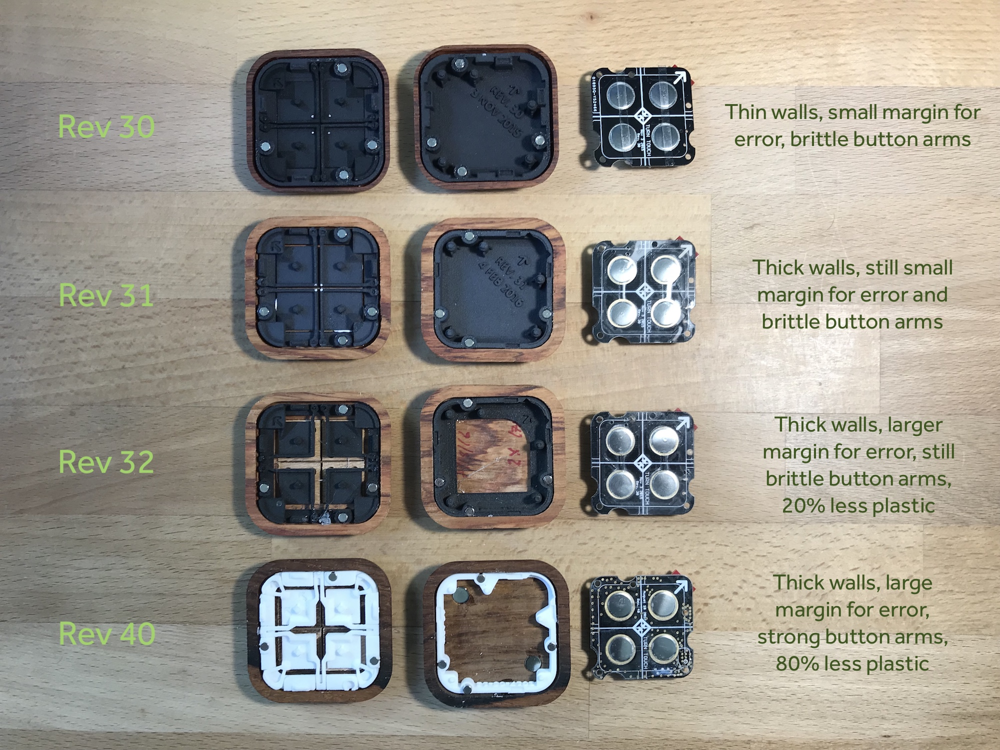
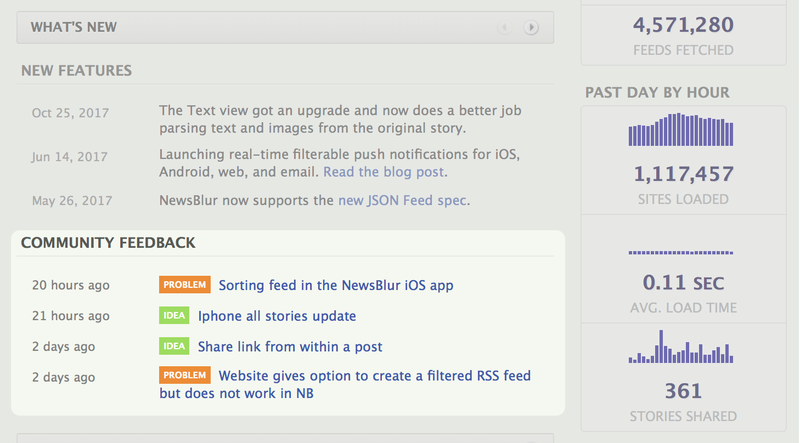
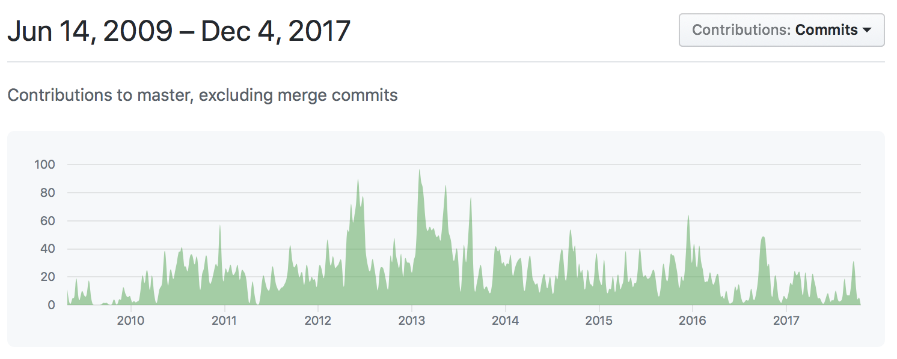
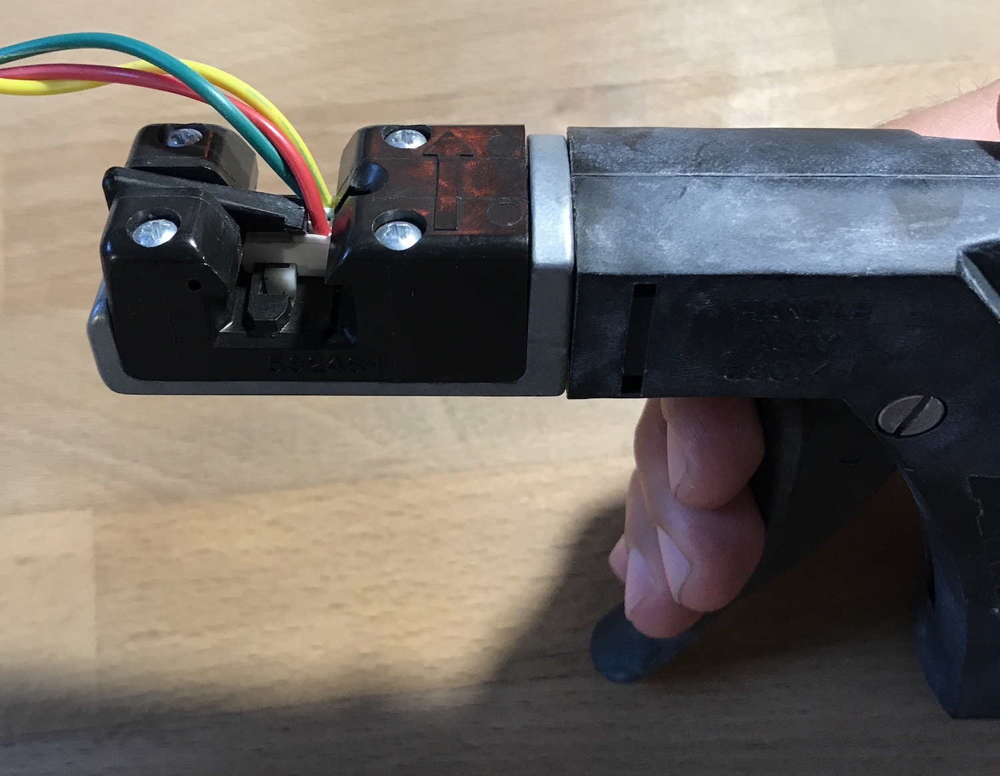
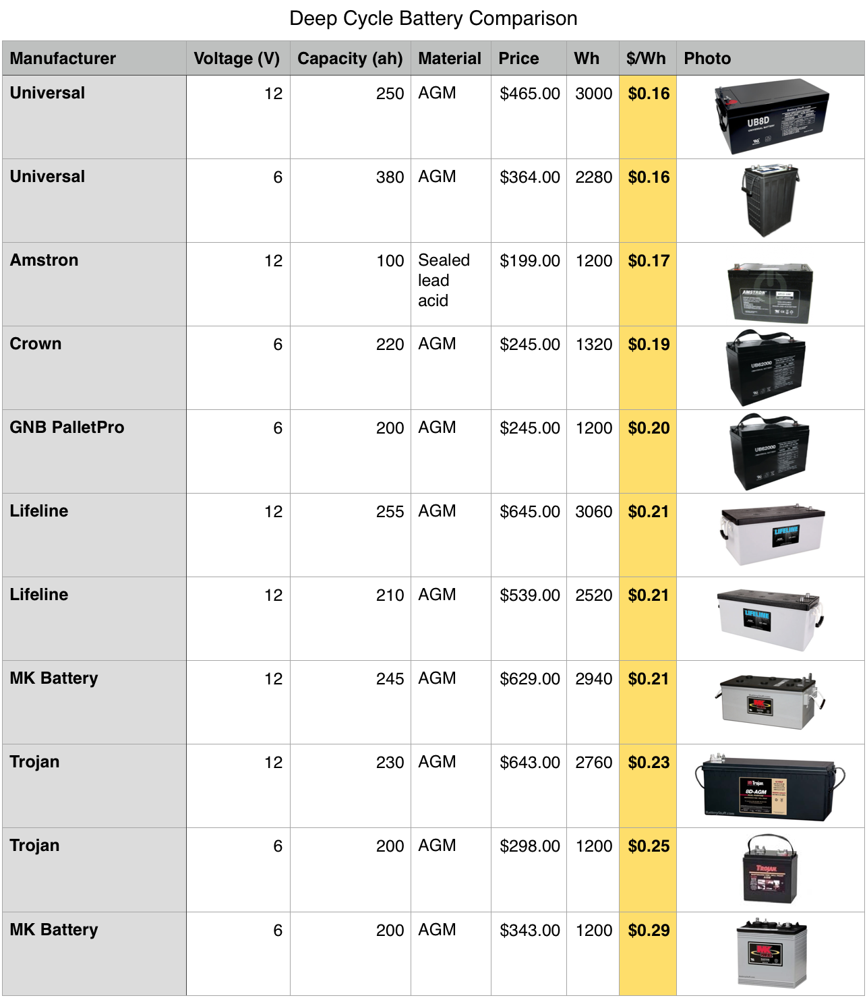

Four projects
Samuel Clay
Turn Touch
2014 – Present

A beautiful wooden remote for all of your smart devices.
NewsBlur
2009 – Present

A personal and trainable RSS news reader.
Pulse + Bloom
2014

Visualize and synchronize two heartbeats.
Grove
2016

A conversation between humans and trees.
2014 – Present
Turn Touch

Turn Touch is a beautiful remote control carved out of solid wood. This project involves software, hardware, materials, and manufacturing. An epic undertaking culminating in a Kickstarter campaign in March 2017 that resulted in nearly a thousand remotes sold to 645 backers.
Smart devices are intended to simplify your life, however the act of controlling them can actually be fairly complicated. Interacting with a home full of smart lights and smart devices often involves pulling out your phone or buying a voice assistant and verbalizing repetitive commands. Turn Touch solves this problem by providing an unobtrusive way to control all the smart devices and apps in your home. Four buttons mapped to all sort of functionality is a faster and more seamless experience of living in the future.
The idea for Turn Touch came to me in 2013, while driving the 101 near Mountain View. I had been wanting a way to control music and video on my iMac while also controlling my Hue lights. There wasn't any tool on the market that had the functionality and the style I wanted, so I decided to build it myself.
Not only would this be a four button remote capable of interacting with all things WiFi, but it would be carved out of solid wood. It would fit into my home in the same way a piece of furniture makes a room more inviting. A natural looking wireless gadget that wouldn't detract from the warmth of a living room.

But to build it I had to learn all of the tools that are part of building hardware. There's a lot involved in building this remote: designing a circuit board and choosing a wireless chip, writing reliable and upgradeable firmware, 3D printing prototypes, injection molding for manufacturing, CAD and CAM for machining varieties of hardwood, and laser cutting mother of pearl for an inlay. I wanted to build a piece that would be museum quality yet something anyone could afford.
This was a solo project where I was responsible for designing, prototyping, and manufacturing each component. It was a laborious process. Not only did I have to make a handful of prototypes but I also needed to design each component to be manufacturable in quantities up to 10,000. That meant creating an assembly process where everything seamlessly came together and clicked into place so ultimately I could handoff the work without compromising quality.


Above is an example of two stages of the design process for reliably machining the wood. On the left is a vise clamp with a single wood blank held tightly, oriented with the help of a level. While the first method of machining had the benefit of using off-the-shelf components so that no custom fixture had to be built, it had enormous drawbacks. To start, the manual nature of positioning and registering the wood blank creates a large margin for error. It also requires tabs to hold the model in place while it's being machined. These tabs then need to be manually sanded off, which is laborious and often inaccurate as the contour shape needs to be maintained.
On the right is the evolution of the machining fixture. The thinking that goes into building this fixture involves finding solutions to each of the older fixture’s problems. There are numerous benefits of this fixture. To start, it can machine dozens of remotes at once. It is also far more accurate as it only requires a surfaced wood board to be placed and held down in one spot, as opposed to the manual and often inaccurate positioning of the vise clamp. It also disposes of the tabs through the use of vacuum holes that hold down the remote while it is processed through two sided machining.


A key concern in building these manufacturing tools was my desire to make it easily replicable. Therefore the entire process only uses off-the-shelf tools and components and can be reassembled in less than a day on site at the factory. It keeps costs low while opening up the freedom to perform the factory work anywhere.


Graduating from machining one remote to thirty at a time took a few steps. An iterative and evolving process that involved a fair amount of trial-and-error resulted in the production ready manufacturing process you see above.

There's a flourish on the bottom of every remote. It's mother of pearl inlayed directly into the wood. This delightful and tasteful addition also serves as the only visible branding on the remote.
The process used to inlay the mother of pearl shell involves a laser cutter and an alignment fixture, reliably producing perfect engravings and cutouts.

Soldering is at the heart of electronics design. Learning how to solder with hot air and reflow techniques, coupled with board stencils and steady hands, was crucial to designing a better board. Part of the process is knowing the constraints and discovering the limitations that allow for a miniature design to fit comfortably into a miniature package.


Part of the manufacturing process involved optimization techniques. Pictured below are changes made in revisions that reduce the amount of material used in an additive process and decrease the amount of material removed in a subtractive process. Increase the size of the wood to perform less work while on the CNC machine and decrease the size and coverage of the black plastic button holders to reduce cost.
All of the wood is pattern matched. This means that individual pieces are cut from the same board and are then ensured to be assembled together in the same configuration before they were machined. This creates a beautiful pattern on the buttons and the case which must be accounted for during the machining process.


Making a museum quality product means making hundreds of prototypes in the pursuit of perfection. Turn Touch involved many messy prototypes, each of which pushed the envelope of what was achievable and what was known to work. Building up enough of these little victories, even on a prototype that was not usable as a final piece, gradually created a process with a high yield and low margin of error.

Through open-source hardware projects like Turn Touch, I’m working to lower the barrier to entry when it comes to creating and manufacturing complex hardware devices. Sure, it’s not what you might call a “traditional business plan”. But I strongly believe that by helping other people use the same tools I use, our community of makers gets larger and more inventive.
2009 – Present
NewsBlur

NewsBlur is a mature RSS news reader that I've worked on for nearly a decade. It's quite popular, especially since the competing Google Reader was sunset in 2013. The design process for NewsBlur involved user research, ongoing user feedback, designing for multiple platforms (web, iOS, and Android, pictured above), and a deep technical dive into the many technologies that make a real-time, continuously updated news reader work.
My role was expansive and full stack. The backend consists of distributed feed fetchers written in Python, capable of fetching and processing one hundred RSS feeds a second, every single second of the day. The web frontend was built in JavaScript using Backbone.js and went through two major design iterations. The iOS app and the Android app are tightly integrated and present a consistent and synchronized user interface for readers. For a user, switching between platforms throughout the day presents no context switching costs.
The problem that NewsBlur is intended to solve is that well-informed readers of the news have to do a lot of work to stay on top of journalism and good writing. For the most part, people have only a few choices. One is to visit individual websites, which is tedious and leads to a vicious cycle of endlessly refreshing and revisiting websites. Alternatively, many people now rely on reading news stories shared exclusively over social media, which holds readers hostage to filter bubbles. An RSS news reader like NewsBlur is designed to offer control and advanced customization while still retaining the ease of use of reading news sites directly.

One powerful way to keep track of multiple news sources is to filter out the stories on subjects you don't want to read while highlighting the stories you do. Rather than asking the user to set complicated filter rules, I designed a trainer, pictured above, that automatically categorized stories, authors, and subjects into easily clickable/tappable thumbs up and thumbs down controls. Using this flexible system gave users an advanced level of control with a minimal investment of work.

Above is a statistics dialog that gave insights into how often news sources are being updated. This is tied to an organizer that lets people cull and manage news sources, offering users a high level overview of their subscriptions.

Above is aggregated training data, condensed and ordered, showing users how a news source is viewed by other readers. This gives insights into the news reading experience that reader would not otherwise experience. By knowing what's popular and what's disliked, users can make better adjustments to their own news subscriptions and training filters.


There's quite a lot more that goes into building a world-class news reader. NewsBlur acts as an archive, saving tagged stories for later retrieval. It's a comprehensive news search engine, offering the ability to search every news site for events, products, and people. And it's a social platform, where people can share stories and form communities around shared interests.
The research and design process that went into each of these features was the result of communicating early and often with users. I added something I've never seen before in a tech product. I integrated the support forums directly into the homepage dashboard of every user, pictured above. In other words, when somebody has an idea or something goes wrong, everybody benefits because it's visible to all users and encourages people to expand on ideas, corroborate bugs, and build test cases.
I have also been fortunate to have an open-source community of 67 contributors who have submitted pull requests to NewsBlur's repository. Users who love the product so much that they take the time to dive into the code and build a contribution have made NewsBlur a better product. I've assisted dozens of these contributors and given them technical advice to help them make better contributions. Strong documentation and a consistent coding style has benefitted NewsBlur enormously. I've brought this mindset to all of my projects and continue to believe that engaging with a community of technical users reaps enormous rewards.
2014
Pulse + Bloom

Pulse and Bloom is an interactive and social art installation that visualizes participants’ heartbeats and invites people to share and sync their human heartbeats in a rhythmic pattern. Pulse and Bloom is one of the largest biofeedback installations of its kind, allowing 40 people to visualize their heartbeats simultaneously. Pulse and Bloom was a Black Rock Arts honorarium art installation in 2014 and has since toured globally.
Pulse and Bloom consists of 20 lotuses of varying heights of 10 to 14 feet with two pulse sensors mounted on the base of the stem. When a participant places their hand upon the pulse sensor, the stem and the flower in the sky start to beat with their heart. When more than one person places their hand on the pulse sensors, the stem starts to pulse with both participants’ heartbeats, making it possible to watch how heart rates of different people in intimate spaces start to beat in sync, much like fireflies flashing in patterns.
My role on this project was to design and build the electronics and lighting as well as figure out how to power the installation off a silent battery and not a loud generator. The electronics consisted of a main circuit board, two peripheral pulse sensors, and hundreds of LEDs including a dozen high current, extremely bright LEDs at the top of the lotus flower.

The pulse sensor was both the riskiest piece of the puzzle and also the most fun to build. In order to show your heartbeat on the lotus, I needed to have a clear reading of your pulse. There are a fair number of issues with most off-the-shelf heartbeat sensors, including:
- Cost: While a $50 pulse sensor is nice, it was way out of our budget. We spent $6 in components to make each of our pulse sensors for a total of 40 sensors (two per lotus).
- Design affordance: There were a fair number of pulse sensors that required an infrared light on one side of your finger and an infrared detector/receiver on the other. This clamping of your finger wasn’t something we could get away with in the desert. We needed a sensor you could just touch and hold on one side. It needed to be a simple interface so we wouldn’t have to show any instructions.
- Reliability: When a sensor gets covered in dust, will it still work? Infrared light, thankfully, passes through a layer of dust and can read the changes in blood flow in your finger. Some options were entirely visual and they would have performed quite poorly out on the playa.
The first prototype I built suffered from design affordance and reliability issues, although it worked pretty well in ideal conditions. I ended up finding an IC by Silicon Labs called the Si114x, which uses three LEDs — two infrared and one visible — and a small QFN-10 sized light sensor.

This tiny IC is a bit tricky to solder as it has no leads and the pins are extremely close together. My yield dropped to about 80%, but 4 out of every 5 pulse sensors I built worked perfectly the first time. If they failed, I would remount them on the hot plate and try wicking away any solder bridges I could find. This worked only about half the time. I now have a plastic cup full of broken pulse sensors.


The main circuit board controls all of the lighting, sensors, timing, and debugging sequences. A reliable circuit board couldn’t just be an Arduino and a breadboard. I decided to use OSH Park and OSH Stencils to fabricate inexpensive circuit boards. I ultimately went through seven revisions while we worked out the final design of the lotuses. This included adding additional lights, additional sensors, controls for EL wire, and better power management using an external buck converter.
All of the wire terminations were made using 2.5mm and 3.5mm pitch screw terminals. In hindsight I would have used female JST-SM mounted connectors and ordered custom wires with JST-SM male connectors. I assumed the lowest common denominator would be bare tinned wire, but all of the bare wires could easily have been switched over to polarized, latching connectors. This would have reduced over 90% of the field work I had to perform on boards, as their wire would fall out of the screw terminals due to not being screwed in with enough force.

Wiring connectors were one of the biggest issues we faced and we fixed it in our next project Grove, the art installation we would go on to build at Burning Man 2016. As you can see below, much of my week was spent performing minor surgery on the art during the day so that it would be ready for the evening mayhem.

The boards would accumulate dust on them everyday. Our plastic enclosures turned out to be too big for the holes we made in the platform. So we ended up using ziploc bags. These baggies stayed attached, but the only reason they didn’t cause any issues is that the boards worked just fine in the dust, as you can see here.
If dust was a real problem for the boards, then I would have spent a whole lot more time making a tight fitting enclosure and a hole for it that protects it both from the elements and from people. The playa gets covered in dust storms regularly throughout the week. A particularly nasty dust storm is pictured here, eating our poor lotus flowers alive.

The entire process lasted 4 months with 2.5 months of nearly full-time work on my part. I’m thrilled that I got to open-source both the process and the firmware. There were a number of issues around the reliability of wire connections, fluctuating power constraints, and tight deadlines eating into the desire for more revisions. And while we shipped on time there were many changes that I wanted to make and had the chance to make for Grove in 2016.
2016
Grove

Grove was a 2016 honorarium installation at Burning Man, funded by Black Rock Arts, and consisted of a team of ten people. Grove is a set of 10 interactive biofeedback sculptures, a conversation between humans and trees. Each tree is made of steel tubes, thousands of LEDs, and custom breathing sensors.
Here’s how Grove works: you sit down at the base of a tree and a flower opens up in front of you as it senses your presence. As you breathe into a pink flower lit from inside, the tree fills up with your breath, rising white streams overtaking multiple slowly descending green lines. As you breathe, the tree shimmers with light as it becomes a nighttime desert oasis.
My role on this project was to build out an electronics team and make the interaction work with thousands of individual LEDs. I brought on three electrical engineers to design and build the three boards: a main control board, a breathing sensor board, and a dispatcher board for the many high current LEDs. I personally wrote the firmware for the sensor and control board. As the team lead I also kept the team in sync and on track to hit the deadlines.

The flower has a proximity sensor embedded inside that is more commonly used by paper towel dispensers to detect hand movement. We used the Si1143, same as in the pulse sensor in Pulse & Bloom, to detect proximity. When we detect that a person is positioned directly in front of the flower, we then allow the breath measurements to light up the tree. Otherwise wind would take over and the tree would be constantly lit.
Here you can see the board that is placed inside the flower. There is a trumpet that fits directly over the board and directs airflow over the board. There are two slots in the board that allow your breath to flow over the hot-wire thermistors and out the back of the flower. Otherwise when you breathed into the flower, the flower would send your last breath back out.


There are a number of lessons I learned in the building of Pulse & Bloom that I applied to the design of Grove. The wire connectors that caused most of the headaches were replaced with new snap-fit connectors. All of the wire-to-board connectors are MTA100 Series female and male pin headers. They are an inexpensive connector that you can crimp onto AWG 22 gauge wires and then easily insert into 0.1” male header pins. They even include an optional polarity wedge on the side so that you can ensure the wires are always plugged in the right direction, which is especially helpful when you have people helping you out and you want to ensure that no mistakes are possible.
The best part about the MTA100 is that the wires are removable, so if you make a mistake you can just pull the wire out of the crimped head and try again. Sometimes the connections wouldn’t take and they would have to be re-crimped. This happened on a few of the trees. In the future I would add circuit testing to the mainboard. This would be an in-circuit current measurement sensor. On boot we would turn each of the LEDs on individually, sensing whether or not the LEDs are actually drawing current. This way we can identify improperly crimped LEDs (or just plain old broken LEDs) and turn on a status LED on the board to quickly check.
Another big difference from Pulse & Bloom is that we decided to make a board that not only could handle the wiring mess but also allow us to easily change out the high current PicoBucks if they shorted, which is something that happened surprisingly often until we realized that the factory solder jobs on the LEDs themselves could sometimes short.
While out in the field we also discovered that the plastic trumpet, which is used to channel your breath toward the sensor while keeping out wind, would cover a bit too much of the proximity sensor. We solved this problem by adding ultrasonic sensors (thanks to Frys for letting us buy out their collection of ultrasonic sensors on the way to the burn), pictured below on top of the orange trumpet. Not bad for a last minute fix.
We spent a couple days adding these ultrasonic sensors into the boards, soldering in the desert and making do with what we had. Thankfully we left a few pins open that we could then use for the new and improved proximity sensors.

Running an electronics installation out in the desert presents a few power problems. Frankly, there is nowhere to plug in, so all of the energy you’re going to need, whether it is stored or rechargeable, is going to have to be brought out there on the playa with you.
We quickly decided on running the installation with solar-powered deep cycle batteries. The cost for the batteries was mitigated slightly by the fact that we already had a 1.2 kW solar array handy. The other option is to use a generator, but while relatively cheap, they are loud and would detract from the serenity of the installation. We could instead choose to run a generator in a baffle box and run AC power over a length 50 meter distance, but that was deemed un-Grove-like and we stuck with batteries.
Alas, as much as we try to avoid it, there’s plenty of firmware debugging to be done on the playa.
The entire process lasted 3 months and involved 5 people on the electronics team, a half dozen people on fabrication, and another dozen people on assembly and installation. My hope is that others learn from our work and use some of the open-source firmware and designs for their own art installations.